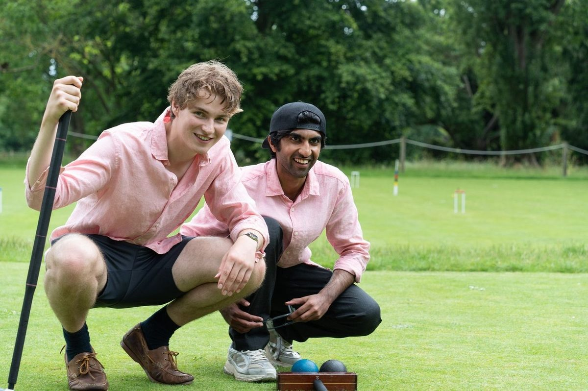

The Varsity Match is OUACC’s annual competition against Cambridge University. It is one of the Club’s principal fixtures.
The 2026 Varsity Match was held on Monday 22 June at the Hurlingham Club in London.
Cambridge won the 2026 match 5-4
For information about previous Varsity matches and reports, please see our archive. <!--